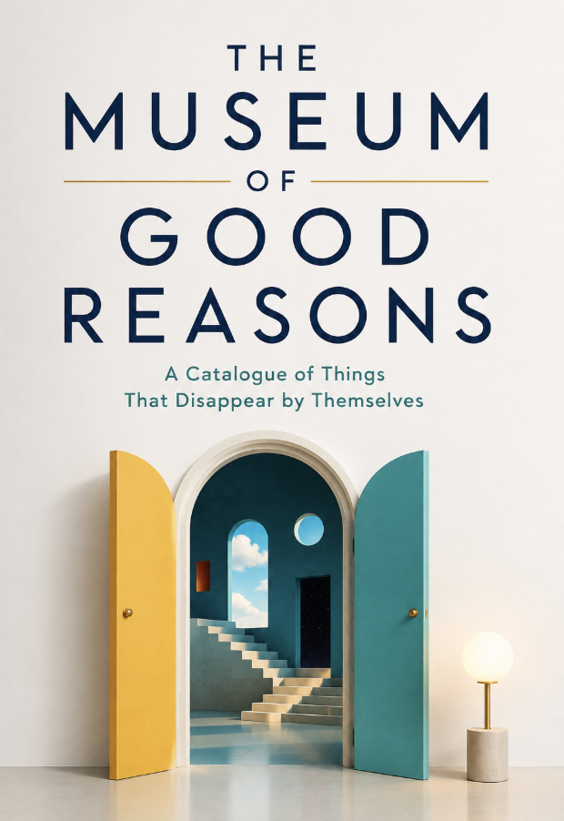

Literature · Axiologic Research Editions
The Museum of Good Reasons
A Catalogue of Things That Disappear by Themselves
Step into a windowless museum where nothing is called theft, abandonment, or exploitation until every reason has been considered. Mara Veld’s task is to correct its labels—but each correction reveals another life, cost, or voice that the institution’s perfect explanations have placed outside the frame.
A museum of omissions
The Museum of Good Reasons begins with a job interview. Mara Veld corrects a school brochure’s claim that humankind “conquered darkness by inventing light”; she writes that people found things they could burn. The correction earns her a post in a museum whose mission is to prove that nothing was ever truly taken.
Its exhibits are ordinary objects with enormous labels: a lamp, a key, a bench, a photograph. The museum does not call a thing stolen, destroyed or ignored. It reconstructs the complete explanation. A house is “released from its previous attachments”; time is “reallocated”; a person’s contribution is “integrated without individual attribution.” None of these formulations is exactly false. That is why the book is unsettling.
Three questions it makes unavoidable
Can an explanation be accurate and still conceal the harm? Mara learns that every label chooses a frame. The lamp requires oil, workers, land, animals and time; no label can contain the whole context, but a label can pretend that its chosen context is enough.
What does neutral language do when authorship is disputed? The museum’s rules ask cataloguers to describe consequences rather than guilt and to use the passive voice when responsibility is unclear. The novel follows the moral cost of that administrative elegance.
How do we keep a correction from becoming another polite erasure? In the Corrections Room, rejected labels are saved because a bad formulation can return under a more respectable name. The book makes that archival practice into a theory of vigilance.
A thing that has been explained can no longer disturb the order.
The room after the label
This is a literary experiment about language, institutions and the appetite for clean narratives. Its museum gives flesh to a question that often remains abstract in political philosophy: who controls the description of a loss controls, in part, the possible response to it.
If you are drawn to Borges-like institutions, bureaucratic horror, or fiction that turns a sentence into an ethical object, it is especially resonant for anyone who has watched a real harm become “context,” “process,” “transition” or “an unfortunate outcome” before it has had the chance to be named.